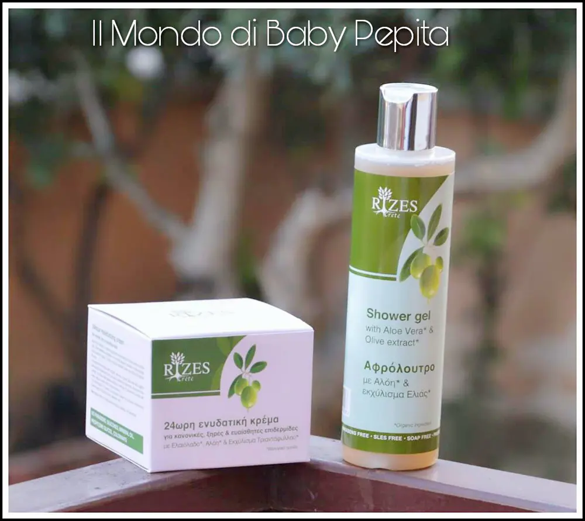
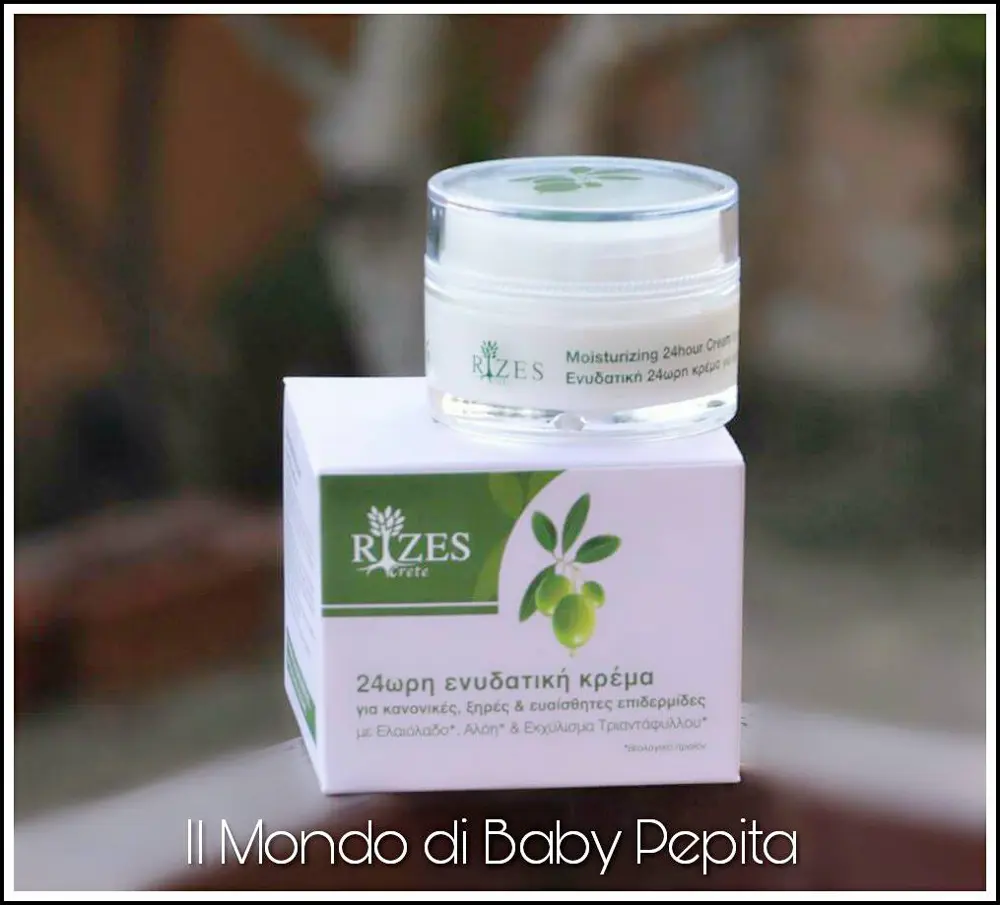
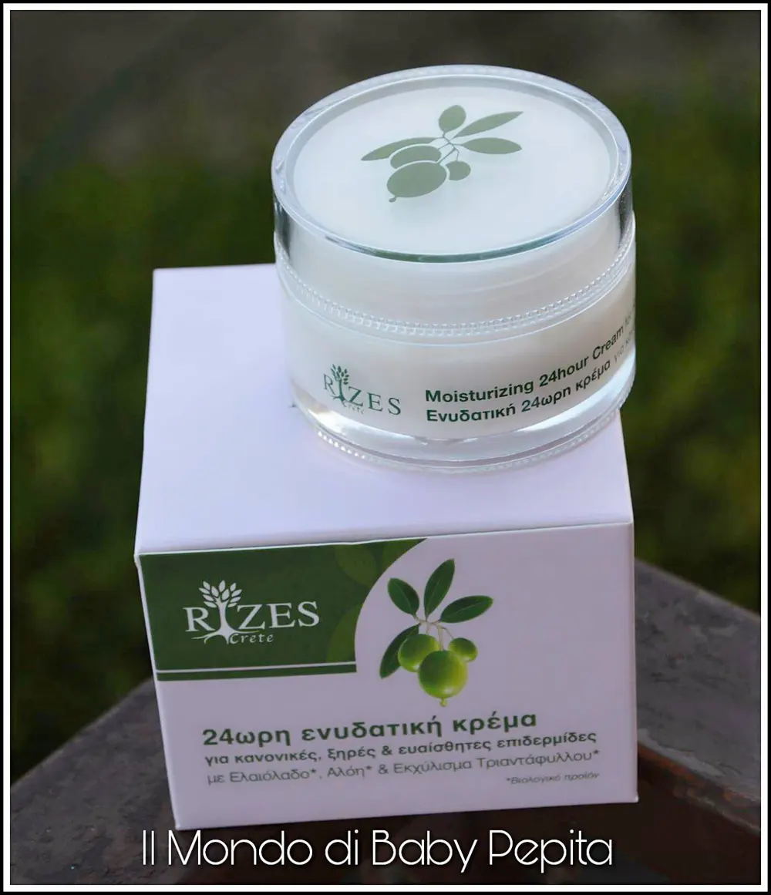
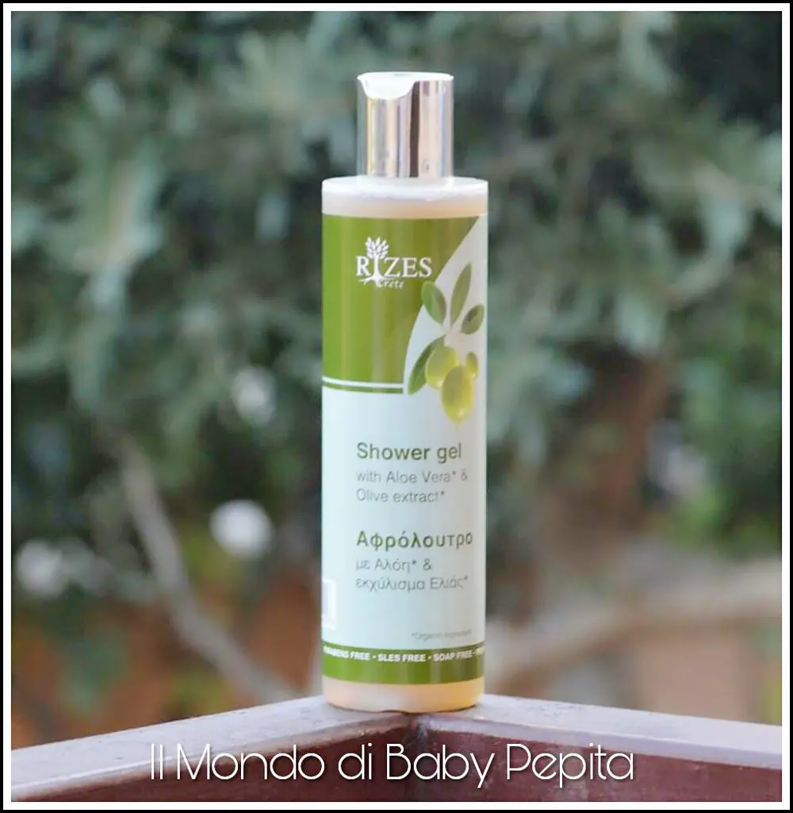

Cosmetica bio: RIZES CRETE
Cosmetica bio: Oggi ho il piacere di ospitare nel mio blog un'azienda greca, la RIZES CRETE. È un'azienda di cosmetici naturali. Gli ingredienti base sono all'olio biologico, piante, erbe e oli essenziali.
I cosmetici Rizes Crete non contengono parabeni, olio di paraffina, silicone e olio di petrolio.
Negli ultimi anni, la medicina e dietetica internazionale consiglia l'olio d'oliva come un elemento nutritivo essenziale per la garanzia della salute e la longevità. Creta, con il suo clima mediterraneo favorisce lo sviluppo del olivo che cresce sia in pianura e montane delle regioni e porta i suoi frutti in inverno.Sull'isola di Creta, ci sono milioni di alberi di ulivo e di migliaia di famiglie basano la loro vita economica nella loro coltivazione.
Oltre ai vantaggi economici l'olio d'oliva è stato utilizzato anche in medicina e in cosmetologia. L'olio di oliva è un bene prezioso per la salute della pelle.
Homer aveva descritto come il «oro liquido". L'olio d'oliva è una vera bellezza e una fonte di vita.L'olio d'oliva è molto ricco di vitamine, minerali, acidi grassi e antiossidanti impianto. Previene l'invecchiamento della pelle, rughe e linee sottili. Offre la nutrizione della pelle, di ristoro e di protezione.Sulla base di questo dono unico della natura della società Rizes Creta crea una serie di prodotti cosmetici per la pelle e dei capelli.
L’azienda non si occupa solo di creme e saponi, ma in generale di tutta la cura della pelle, dei capelli, delle mani e dell’igiene del corpo. Inoltre, produce anche utensili legno di ulivo e oli naturali. Sono dermatologicamente testati, arricchiti con estratti naturali biologici e non sono testati su animali.
Ho ricevuto 2 prodotti: • crema idratante 24 ore per pelli normali, secche e sensibili con olio d'oliva, aloe vera ed estratti di rose. • bagnoschiuma rinfrescante con aloe vera ed estratti di oliva organica.


Per pelli normali, secche e sensibili con olio d'oliva, aloe vera ed estratti di rose. È una crema con estratti della Imperata Cylindrical che è un idratante per 24 ore. Contiene proteine di grano e miele.
Addirittura contiene anche la calendula per una cura e nutrizione profonda della pelle.
In più ha estratti organici di rosa, camomilla e uva con proprietà lenitive e antiossidanti.
Insomma una crema valida contro le diverse tipologie di pelli.
Agisce efficacemente sulla pelle grazie alla naturalità degli ingredienti presenti nella sua formula. È un buon alleato contro arrossamenti, screpolature e secchezza. Un trattamento completo quotidiano, efficace nelle 24 ore della tua giornata.

Usando questa crema ho scoperto che il viso appare più riposato e rilassante.
Ha un odore delicato e piacevole, se avete il timore di sentire un profumo di rose non temete, il profumo di rose non si percepisce.
Prezzo: 18,80 €
BAGNOSCHIUMA RINFRESCANTECon aloe vera ed estratti di oliva organica è un bagnoschiuma che vi darà una sensazione di freschezza unica. Contiene, al suo interno, l'estratto di miele e pantenolo che idraterà la vostra pelle in modo profondo regalando una morbidezza inconfondibile.
Non ha un odore particolare, ha un profumo delicato.
Ammorbidisce la pelle, idratandola e migliorandone l'elasticità. È adatto a tutti i tipi di pelle e, nonostante la presenza dell'estratto biologico di oliva, non va ad ungere. Ma bensì è leggerissimo.

Ha un packaging semplice, in plastica dura e il tappo non si estrae ma bensì ha un tasto da premere per un dosaggio del prodotto. Direi molto comodo per non esagerare e sprecare il bagnoschiuma, in quanto basta davvero poco.
Il flacone è trasparente, così è possibile vedere anche il prodotto al suo interno fin dove arriva man mano che lo usiamo.
Prezzo: 5,55 €
Io, sinceramente, mi sono trovata bene. Avendo una pelle secca posso dire che sono efficaci, essendo anche naturali non fanno male e di conseguenza l'ho usato ogni volta che mi sono lavata (bagnoschiuma) e quotidianamente (crema), rendendo la mia pelle morbida ed idratata.